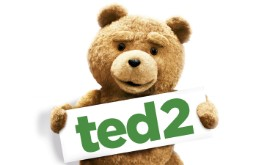
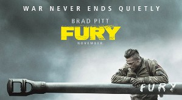
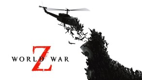
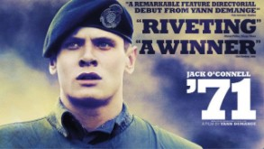
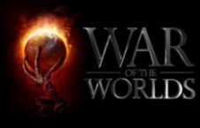
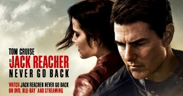

A Ted egy 2012-es amerikai vígjáték, melynek írója, producere és rendezője Seth MacFarlane, a Family Guy megalkotója. A film John Bennettről, a harmincöt éves férfiról szól, aki kénytelen szeretett játékmackójával foglalkozni, aki egy gyermekkori kívánság eredményeként életre kelt és azóta is ott él mellette.
Harag (eredeti címén: Fury) egy 2014-es amerikai háborús film, melyet David Ayer írt és rendezett. 1945 áprilisában, pár héttel a II. világháború befejezése előtt játszódik.Harag nevezetü tank és annak ötfős legénységének az ellenséggel való harcát mutatja be.
A Z világháború (World War Z) 2013-ban bemutatott brit-amerikai akciófilm. A zombi világháború története című könyve alapján készült akció-horror egy ENSZ alkalmazott küzdelmét mutatja be, amint versenyfutást folytat az idővel és a végzettel, hogy megállítsa a zombi fertőzés szétterjedését a világban.
A film egy angol háborús filmdráma amit Yann Demange rendezett.1971-ben, a fegyveres konfliktusok kirobbanásának első éveiben játszódik és a főszereplője Gray Hook fiatal brit katona. Gary egy bevetésen egy fegyvert kaparintó kisfiú után rohan, leszakad a csapatától igy kénytelen egyedül megpróbálni életben maradni és küzdeni a túlélésért.
A Világok harca 2005-ös amerikai tudományos-fantasztikus film H. G. Wells azonos című kisregénye alapján, Steven Spielberg rendezésében. A főszereplő Tom Cruise egy elvált kikötői munkást alakít, aki elidegenült gyermekei védelmezésére kényszerül, mikor idegen lények offenzívát indítanak a Föld ellen, menekülésre kényszerítve az embereket.
A Jack Reacher 2012-es amerikai bűnügyi akciófilm, thriller. A filmet Christopher McQuarrie írta. A történetben egy mesterlövész öt emberrel végez egy stadion mellett. A nyomok alapján az elkövető egykori katonai mesterlövész, James Barr, aki azt kéri kihallgatásakor, hogy keressék meg Jack Reachert, egykori katonatársát. A rejtélyes életet élő Reacher (Tom Cruise) meg is jelenik, és a kirendelt ügyvédnő, Helen Rodin segítségével elkezd nyomozni, mivel számára nem egyértelmű Barr bűnössége.
